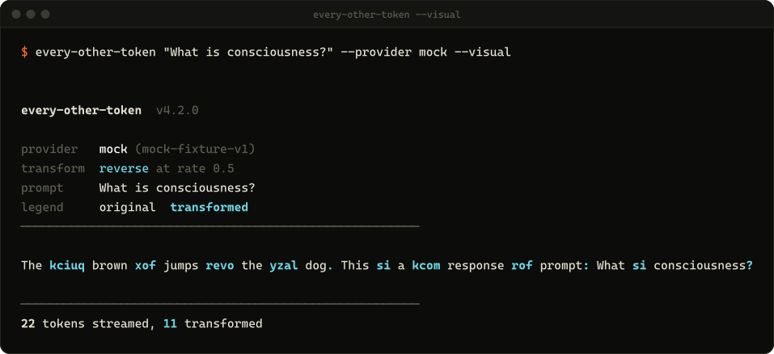
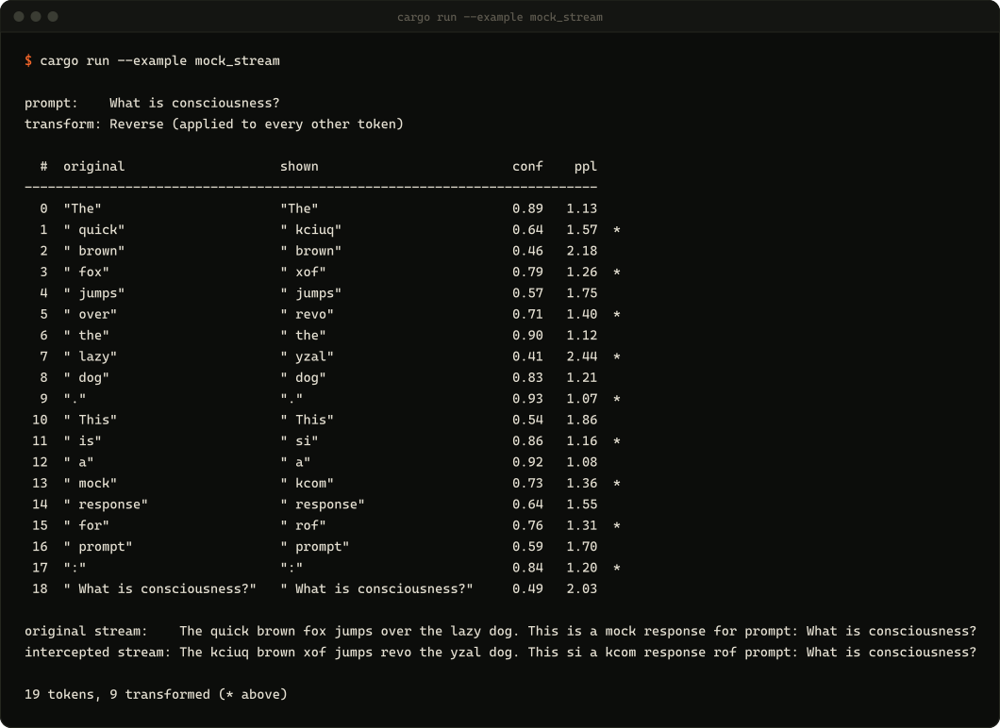
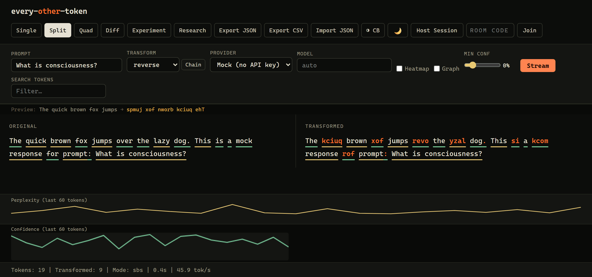

9 transforms, chainable
reverse, uppercase, mock, noise, chaos, scramble, delete, synonym, delay:N, or a chain like reverse,uppercase.
every-other-token is a Rust CLI and web UI that sits on an OpenAI or Anthropic token stream as it arrives. It rewrites every other token (or any fraction), and it tells you how sure the model was about each one: confidence exp(logprob) and perplexity exp(-logprob), per token, live.
Recorded from the real /stream endpoint of every-other-token --web --provider mock. The mock provider replays a fixed reply with fixed logprobs through the same interception pipeline a real model goes through, so it runs with no API key. Point it at OpenAI or Anthropic and the tokens and numbers are the model's own.
Prebuilt binaries for Linux x86_64, macOS (Apple Silicon and Intel) and Windows x86_64 are on the releases page. Or build it with Cargo (Rust 1.81+).
$ cargo install every-other-token$ every-other-token "What is consciousness?" --provider mock --visual$ export OPENAI_API_KEY=sk-... # or ANTHROPIC_API_KEY with --provider anthropic $ every-other-token --web # http://localhost:8888
The stream prints as it arrives. With --visual, rewritten tokens are highlighted; --heatmap colors each token by importance instead.

Each intercepted token is an event with the original text, what was shown, its index, whether it was rewritten, confidence, perplexity and the top alternatives. Consume them from the library, as JSON lines with --json-stream, or export them to CSV, JSONL or a self-contained HTML heatmap.

cargo run --example mock_stream, from a clone of the repo.--web serves a single page with no build step and no external scripts. Single, split, quad (four transforms at once), OpenAI vs Anthropic diff, A/B system prompts, a research dashboard, JSON and CSV export, and collaborative rooms where several people edit tokens mid-stream.

reverse, uppercase, mock, noise, chaos, scramble, delete, synonym, delay:N, or a chain like reverse,uppercase.
--rate 0.3 spreads rewrites evenly at any fraction. --seed makes random transforms reproducible. --min-confidence only touches tokens the model was unsure of.
--diff-terminal streams OpenAI and Anthropic side by side and compares their confidence structure.
Run two system prompts against the same user prompt, many times, and test the confidence shift with Welch's t-test (--significance).
--research --runs 20 runs headless and writes aggregate perplexity, confidence and vocabulary stats to JSON.
Record any session to JSON and replay it later, for example to spot behavior changes after a model update.